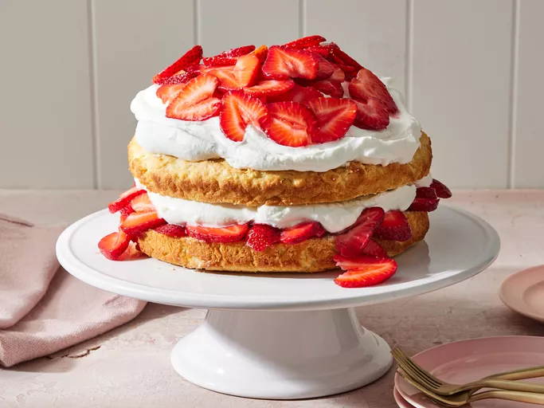

Strawberry Shortcake

Description
This strawberry shortcake is the classic, biscuit-style shortcake — not the pound cake variety. The cake is sliced in half and layered with sweet juicy strawberries and whipped cream for a delicious summer treat!
Strawberry shortcake is a classic summertime treat. It's loaded with fresh, bright flavors (and it's quick and easy to make). This delicious strawberry shortcake recipe will be your new go-to for all your strawberry dessert needs. Be sure to click that save button — you'll come back to this recipe for years to come.
Ingredients
- Strawberries
- Sugar
- Flour
- Baking Powder
- Salt
- Butter
- Egg
- Half and half
- Heavy Whipping Cream
Steps
- Prep the berries: Slice the strawberries and cover them with white sugar.
- Make the batter: Combine the dry ingredients, then cut in the butter until the mixture is crumbly. Add the egg and half-and-half and stir until combined.
- Bake the cake: Pour the batter into the prepared pan and bake until golden brown.
- Assemble the strawberry shortcake: Cut the cake in half. Top the bottom layer with half the strawberries, then replace the top of the cake. Top the cake with the remaining berries and whipped cream.
-